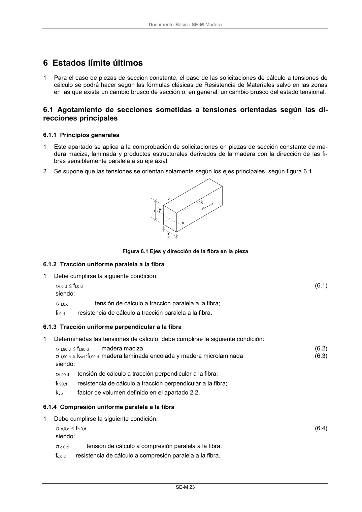

DB-SE-M Madera · edición 2019-12-20 · capa oficial
Documento DB-SE-M-oficial · SHA-256 del PDF 26b5819839ebfda78b0b119c5e76a0a37773b0d763c05688541870075df93718
Copia fiel del PDF fuente · Fuente oficial
Ficha de la disposición en la fuente oficial
Formatos: JSON del segmento · Markdown
5.3.4 Análisis simplificado de celosías trianguladas con placas dentadas 1 Para realizar el análisis simplificado de celosías trianguladas que se establece a continuación, deben cumplirse los requisitos siguientes: a) no existen ángulos entrantes en el contorno; b) el ancho del apoyo está situado dentro de la longitud a1, y la distancia a2, figura 5.3, no es supe- rior a (a1 / 3) ni a 100 mm; c) la altura de la celosía es superior a 0,15 veces el vano total y 10 veces el canto del cordón ma- yor, véase figura 5.1; Figura 5.3 Geometría del apoyo 2 El análisis simplificado consiste en los esfuerzos en las barras de la siguiente forma: DocumentoBásico SE-M Madera SE-M 21 a) las fuerzas axiales en las barras se determinan bajo la hipótesis de que todos los nudos están articulados; b) los momentos de flexión de las barras de un solo vano se determinan bajo la hipótesis de que sus extremos están articulados. Los momentos de flexión de aquellas barras de dos o más va- nos, que mantienen su continuidad (por ejemplo cordones) se determinan considerando que la pieza (cordón) es una viga con un apoyo en cada nudo (viga continua). La influencia de los des- plazamientos de los nudos y de la rigidez parcial de las conexiones puede considerarse redu- ciendo un 10 % los momentos en los apoyos interiores. Los momentos en los vanos se determi- narán en función de los momentos resultantes en los nudos. DocumentoBásico SE-M Madera SE-M 23
